X7¶
GERGONNE POINT
gergonne_point(A, B, C) -> X_7 • Gergonne (1818) • Kimberling X(7) • Search Value \((6, 9, 13)\): \(\frac{20 \sqrt{35}}{159} \approx 0.744160979006\)
X7 (GERGONNE POINT) constructed at X7 = \(\left(\frac{414}{73},\; \frac{288}{73}\right)\) in exact rational coordinates on the Heronian reference triangle \((a, b, c) = (15, 13, 14)\) over \(\mathbb{Q}\) with vertices A = \((0, 0)\), B = \((14, 0)\), C = \((5, 12)\), and area \(\Delta = 84\). Switch tabs above to inspect exact constructions on Right \((3, 4, 5)\), Kepler \((1, \sqrt{\phi}, \phi)\), and Kimberling \((6, 9, 13)\).¶
Constructed Elements
Derived Triangle: Intouch (Contact) Triangle △TaTbTc — vertices Ta, Tb, Tc (Contact triangle of Incircle touchpoints on BC, CA, AB)
Circle: Incircle (incircle) — Inscribed circle tangent to sidelines at T_a, T_b, T_c; centered at X1 INCENTER
Concurrence Lines (Gergonne Cevians): A–Ta, B–Tb, C–Tc concurring at X7
Homogeneous Coordinates & Exact Invariants¶

Homogeneous Coordinates of X7 on Heronian \((15, 13, 14)\): orthogonal trilinear struts \((\alpha, \beta, \gamma)\) and signed barycentric sub-triangles \((\Delta_a, \Delta_b, \Delta_c)\).¶
Trilinear Coordinates (\(\alpha : \beta : \gamma = 2548 : 2205 : 2340\)): Dropping orthogonal perpendiculars X7Ta, X7Tb, and X7Tc from X7 to sidelines BC, CA, and AB meets the sides at right-spread pedal feet Ta = \(\left(\frac{16622}{1825},\; \frac{11904}{1825}\right)\), Tb = \(\left(\frac{27630}{12337},\; \frac{66312}{12337}\right)\), and Tc = \(\left(\frac{414}{73},\; 0\right)\). The orthogonal strut lengths on \((15, 13, 14)\) are \(d_a = \frac{1568}{365}\), \(d_b = \frac{3528}{949}\), and \(d_c = \frac{288}{73}\), reducing to homogeneous trilinears \(\alpha : \beta : \gamma = 2548 : 2205 : 2340\).
Barycentric Coordinates (\(u : v : w = 28 : 21 : 24\)): Joining X7 to the vertices along X7A, X7B, and X7C forms signed sub-triangles △X7BC, △X7CA, and △X7AB of exact signed areas \(\Delta_a = \frac{2352}{73}\), \(\Delta_b = \frac{1764}{73}\), and \(\Delta_c = \frac{2016}{73}\) (summing to \(\Delta_a + \Delta_b + \Delta_c = 84 = \Delta\)), in homogeneous ratio \(u : v : w = 28 : 21 : 24\).
Reference Triangle |
Field |
Cartesian \((x, y)\) |
Trilinears \(\alpha : \beta : \gamma\) |
Barycentrics \(u : v : w\) |
Sub-Areas \((\Delta_a, \Delta_b, \Delta_c)\) |
Directed Trilinear \((d_a,\, Q_a)\) |
|---|---|---|---|---|---|---|
Heronian \((15, 13, 14)\) |
\(\mathbb{Q}\) |
\(\left(\frac{414}{73},\; \frac{288}{73}\right)\) |
\(2548 : 2205 : 2340\) |
\(28 : 21 : 24\) |
\(\left(\frac{2352}{73},\; \frac{1764}{73},\; \frac{2016}{73}\right)\) |
\(\frac{1568}{365}\; (Q_a = \frac{2458624}{133225})\) |
Right \((3, 4, 5)\) |
\(\mathbb{Q}\) |
\(\left(\frac{171}{55},\; \frac{72}{55}\right)\) |
\(40 : 45 : 72\) |
\(2 : 3 : 6\) |
\(\left(\frac{12}{11},\; \frac{18}{11},\; \frac{36}{11}\right)\) |
\(\frac{8}{11}\; (Q_a = \frac{64}{121})\) |
Kepler \((1, \sqrt{\phi}, \phi)\) |
\(\mathbb{Q}(\sqrt{\phi})\) |
\(\left(\frac{8 \phi \sqrt{\phi}}{11} - \frac{9 \sqrt{\phi}}{11} + \frac{6 \phi}{11} - \frac{4}{11},\; \frac{3 \phi \sqrt{\phi}}{11} - \frac{2 \sqrt{\phi}}{11} + \frac{5 \phi}{11} - \frac{7}{11}\right)\) |
\(\phi \sqrt{\phi} - \phi : \sqrt{\phi} \left(2 - \phi\right) : \sqrt{\phi} \left(\phi - 1\right)\) |
\(\phi \sqrt{\phi} - \phi : \phi - 1 : \sqrt{\phi}\) |
\(\left(\frac{3 \phi \sqrt{\phi}}{11} - \frac{2 \sqrt{\phi}}{11} - \frac{\phi}{22} - \frac{3}{22},\; - \frac{7 \phi \sqrt{\phi}}{22} + \frac{6 \sqrt{\phi}}{11} + \frac{3 \phi}{22} - \frac{1}{11},\; \frac{\phi \sqrt{\phi}}{22} + \frac{3 \sqrt{\phi}}{22} - \frac{\phi}{11} + \frac{5}{22}\right)\) |
\(\frac{6 \phi \sqrt{\phi}}{11} - \frac{4 \sqrt{\phi}}{11} - \frac{\phi}{11} - \frac{3}{11}\; (Q_a = - \frac{40 \phi \sqrt{\phi}}{121} + \frac{12 \sqrt{\phi}}{121} + \frac{47 \phi}{121} - \frac{2}{121})\) |
Kimberling \((6, 9, 13)\) |
\(\mathbb{Q}(\sqrt{35})\) |
\(\left(\frac{5632}{689},\; \frac{320 \sqrt{35}}{689}\right)\) |
\(195 : 208 : 720\) |
\(5 : 8 : 40\) |
\(\left(\frac{20 \sqrt{35}}{53},\; \frac{32 \sqrt{35}}{53},\; \frac{160 \sqrt{35}}{53}\right)\) |
\(\frac{20 \sqrt{35}}{159}\; (Q_a = \frac{14000}{25281})\) |
Alternate Coordinates7 forms
Trilinears: \(\sec^{2}(A/2) : \sec^{2}(B/2) : \sec^{2}(C/2)\)
Trilinears: \(1/(\tan(B/2) + \tan(C/2)) : 1/(\tan(C/2) + \tan(A/2)) : 1/(\tan(A/2) + \tan(B/2))\)
Trilinears: \((bc - S_{A})/a : (ca - S_{B})/b : (ab - S_{C})/c\)
Trilinears: \((1 - \cos A)a^{-2} : :\)
Barycentrics: \(\tan A/2 : \tan B/2 : \tan C/2\)
Barycentrics: \(bc - S_{A} : ca - S_{B} : ab - S_{C}\)
Barycentrics: \(r_{a} : r_{b} : r_{c}\), where \(r_{a}\), \(r_{b}\), \(r_{c}\) are the exradii
Incident Central Lines¶

Principal Central Lines Through X7 on Heronian \((15, 13, 14)\).¶
Gergonne–Centroid–Mittenpunkt Line {2, 7, 9} — collinear axis through X2 (Centroid, \(\left(\frac{19}{3},\; 4\right)\)), X7, X9 (Mittenpunkt, \(\left(\frac{973}{146},\; \frac{294}{73}\right)\)), with exact Cartesian equation \(12 x - 145 y + 504 = 0\) (spread \(\frac{144}{21169}\) relative to AB).
Soddy Line {1, 7, 20} — collinear axis through X1 (Incenter, \(\left(6,\; 4\right)\)), X7, X20 (De Longchamps Point, \(\left(9,\; \frac{9}{2}\right)\)), with exact Cartesian equation \(x - 6 y + 18 = 0\) (spread \(\frac{1}{37}\) relative to AB).
Nagel Point–Orthocenter Of The Intouch Triangle Central Line {7, 8, 65} — collinear axis through X7, X8 (Nagel Point, \(\left(7,\; 4\right)\)), X65 (Orthocenter Of The Intouch Triangle, \(\left(\frac{358}{65},\; \frac{256}{65}\right)\)), with exact Cartesian equation \(4 x - 97 y + 360 = 0\) (spread \(\frac{16}{9425}\) relative to AB).
X7 lies on the Lucas cubic.
Full Incident Central Line Catalog78 lines
{1, 20}, {2, 9}, {3, 943}, {4, 273}, {6, 294}, {8, 65}, {11, 658}, {12, 1268}, {21, 56}, {27, 81}, {37, 241}, {33, 1041}, {34, 1039}, {55, 2346}, {58, 272}, {59, 1275}, {72, 443}, {73, 1246}, {76, 1479}, {80, 150}, {92, 189}, {100, 1004}, {104, 934}, {108, 1013}, {109, 675}, {145, 1266}, {171, 983}, {174, 234}, {177, 555}, {190, 344}, {192, 335}, {193, 239}, {218, 277}, {220, 1223}, {225, 969}, {238, 1471}, {253, 280}, {256, 982}, {274, 959}, {281, 653}, {286, 331}, {310, 314}, {330, 1432}, {349, 1269}, {354, 479}, {404, 1259}, {452, 1467}, {464, 1214}, {480, 1376}, {492, 1267}, {513, 885}, {517, 1000}, {528, 664}, {554, 1082}, {594, 599}, {604, 1429}, {757, 1414}, {840, 927}, {857, 1901}, {870, 1431}, {940, 1407}, {941, 1427}, {944, 1389}, {952, 1159}, {986, 1254}, {987, 1106}, {1002, 1362}, {1020, 1765}, {1061, 1870}, {1210, 3091}, {1354, 1367}, {1365, 1366}, {1386, 1456}, {1419, 1449}, {1435, 1848}, {1486, 1602}, {1617, 1621}, {2475, 2893}
Functional Relations & Conjugates¶
Conjugate & Homothetic Partners of X7 on Heronian \((15, 13, 14)\).¶
Isogonal Conjugate: X55 (Insimilicenter(Circumcircle, Incircle), homogeneous barycentrics \(675 : 676 : 686\)) at \(\left(\frac{614}{97},\; \frac{392}{97}\right)\), joined along {7, 55} (isogonal conjugate via \(a^2 vw : b^2 wu : c^2 uv\)).
Isotomic Conjugate: X8 (Nagel Point, homogeneous barycentrics \(6 : 8 : 7\)) at \(\left(7,\; 4\right)\), joined along {7, 8} (isotomic conjugate via \(vw : wu : uv\)).
Complement: X9 (Mittenpunkt) at \(\left(\frac{973}{146},\; \frac{294}{73}\right)\), joined along {7, 9} — complement of X7 dilated from X2 by factor \(-\frac{1}{2}\).
Anticomplement: X144 (Anticomplement Of X7) at \(\left(\frac{559}{73},\; \frac{300}{73}\right)\), joined along {7, 144} — anticomplement of X7 dilated from X2 by factor \(-2\).
Circumcircle Inverse: Inversion in circumcircle centered at X3 = \(\left(7, \frac{33}{8}\right)\) (\(Q_R = \frac{4225}{64}\)) maps X7 along {3, 7} (\(Q(X7, X3) = \frac{613201}{341056}\), scale \(Q_R / Q = \frac{22515025}{613201}\)) to exact algebraic point at \(\left(- \frac{25624818}{613201},\; - \frac{1518624}{613201}\right)\) (homogeneous barycentrics \(2524900 : -1785147 : -126552\)) .
Full Functional Relations Catalog64 relations
X7 = reflection of Xi in Xj for these (i,j): (9, 142), (144, 9), (390, 1), (673, 1086), (1156, 11)
X7 = isogonal conjugate of X55
X7 = isotomic conjugate of X8
X7 = cyclocevian conjugate of X7
X7 = circumcircle-inverse of (32624)
X7 = incircle-inverse of (1323)
X7 = complement of X144
X7 = anticomplement of X9
X7 = Xi-Ceva conjugate of Xj for these (i,j): (75, 347), (85, 2), (86, 77), (286, 273), (331, 278)
X7 = cevapoint of Xi and Xj for these (i,j): (1, 57), (2, 145), (4, 196), (11, 514), (55, 218), (56, 222), (63, 224), (65, 226), (81, 229), (177, 234)
X7 = Xi-cross conjugate of Xj for these (i,j): (1, 2), (4, 189), (11, 514), (55, 277), (56, 278), (57, 279), (65, 57), (177, 174), (222, 348), (226, 85), (354, 1), (497, 8), (517, 88)
X7 = crosspoint of Xi and Xj for these (i,j): (75, 309), (86, 286)
X7 = crosssum of Xi and Xj for these (i,j): (41, 1253), (42, 228)
X7 = crossdifference of every pair of points on line X657X663
X7 = X57-Hirst inverse of X1447
X7 = insimilicenter of inner and outer Soddy circles; the exsimilicenter is X1
X7 = Xi-beth conjugate of Xj for these (i,j): (7, 269), (21, 991), (75, 75), (86, 7), (99, 7), (190, 7), (290, 7), (314, 69), (645, 344), (648, 7), (662, 6), (664, 7), (666, 7), (668, 7), (670, 7), (671, 7), (811, 264), (886, 7), (889, 7), (892, 7), (903, 7)
X7 = vertex conjugate of foci of inellipse that is isotomic conjugate of isogonal conjugate of incircle (centered at X2886)
X7 = trilinear product of vertices of Hutson-extouch triangle
X7 = barycentric product of PU(47)
X7 = trilinear product of PU(94)
X7 = vertex conjugate of PU(95)
X7 = bicentric sum of PU(120)
X7 = perspector of ABC and its intouch triangle.
X7 = perspector of ABC and the reflection in X57 of the pedal triangle of X57
X7 = perspector of AC-incircle
X7 = X6-of-intouch-triangle; X7 is the only point X inside ABC Such that X(ABC) = X(
A'B'C'), whereA'B'C'= cevian triangle ofXX7 = trilinear pole of Gergonne line
X7 = trilinear pole, wrt intouch triangle, of Gergonne line
X7 = pole of Gergonne line wrt incircle
X7 = pole wrt polar circle of trilinear polar of X281 (line X3064X3700)
X7 = X48-isoconjugate (polar conjugate) of X281
X7 = center of circumconic that is locus of trilinear poles of lines passing through X3160
X7 = antigonal image of X1156
X7 = homothetic center of intouch triangle and anticomplement of the excentral triangle
X7 = X6-of-intouch-triangle; X7 is the only point X inside ABC such that X(ABC) = X(
A'B'C'), whereA'B'C'= cevian triangle ofXX7 = perspector of ABC and cross-triangle of inner and outer Soddy triangles
X7 = perspector of excentral triangle and cross-triangle of ABC and Honsberger triangle
X7 = perspector of inverse-in-excircles triangle and cross-triangle of ABC and inverse-in-excircles triangle
X7 = perspector of inverse-in-incircle triangle and cross-triangle of ABC and inverse-in-incircle triangle
X7 = perspector of ABC and cross-triangle of ABC and Gemini triangle 40
X7 = barycentric product of vertices of Gemini triangle 40
X7 = excentral-to-intouch similarity image of X9
X7 = endo-homothetic center of Ehrmann vertex-triangle and Ehrmann mid-triangle; the homothetic center is X3818
Four-Triangle Symbolic Invariance¶

Four-Triangle Invariance of X7 across Heronian (15, 13, 14), Right (3, 4, 5), Kepler (1, √φ, φ), and Kimberling (6, 9, 13).¶
Across the four canonical algebraic number fields — Heronian (15, 13, 14) over \(\mathbb{Q}\) (\(X7 = \left(\frac{414}{73},\; \frac{288}{73}\right)\)), Right (3, 4, 5) over \(\mathbb{Q}\) (\(X7 = \left(\frac{171}{55},\; \frac{72}{55}\right)\)), Kepler (1, √φ, φ) over \(\mathbb{Q}(\sqrt{\phi})\), and Kimberling (6, 9, 13) over \(\mathbb{Q}(\sqrt{35})\) (\(X7 = \left(\frac{5632}{689},\; \frac{320 \sqrt{35}}{689}\right)\)) — X7 remains strictly interior (\(\Delta_a, \Delta_b, \Delta_c > 0\)) across all four acute, Pythagorean right, golden right, and obtuse scalene triangles, preserving its exact homogeneous law \(u : v : w\) without floating-point approximation.
Related Collection 1 Topic Guides
T_2: Isotomic Conjugate • T_11: The Soddy Line • T_12: The Fuhrmann & Spieker Central Lines • T_14: The Incircle & Excircles • T_22: Intouch (Contact) & Extouch Triangles
Notes¶
An exarc circle is a circle tangent to two sides of a triangle ABC and externally tangent to the circumcircle of ABC. The point whose distance to the sides BC, CA, AB are proportional to the respective radii of the exarc circles is X279. The point having distances to the sides proportional to the radii of the inarc circles is X7. See Martin Lukarevski, “Exarc radii and the Finsler-Hadwiger inequality”, The Mathematical Gazette 106, issue 565, March 2022, pp. 138-143.